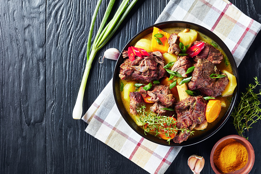
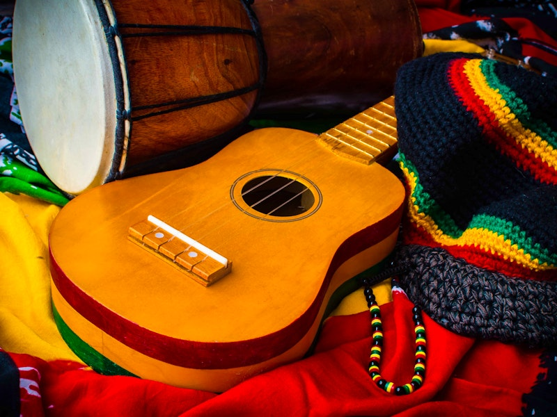
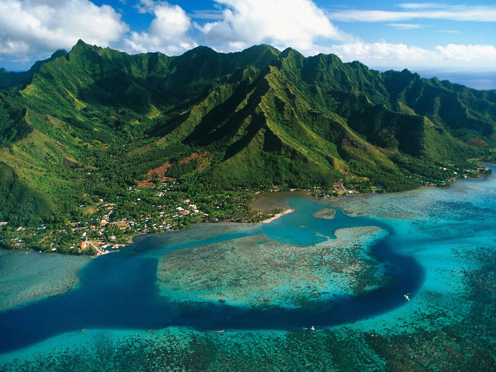

Jamacia cuisnes contist of many things, they consist of a wide mixture of flavors, spices and other influences from numerous and various diffrent food cultures, When u go to a jamaican restuarint be ready to be in store for tasty food that is rich in flavor.Ingridents span from native grown and ingridents from abroad.

Fun Facts(Food)
Callaloo is a leafy green vegetable often cooked with onions, tomatoes, and scotch bonnet peppers, similar to spinach but with a unique flavor.
Jamaican patties are flaky pastries filled with spicy fillings like beef, chicken, or vegetables, often served as a quick snack or lunch.
Jamacia culture is amde up of alot of things like religon,norms, values and lifestyle that define jamaican people, the culture is mixed society, steming from a history of the orignilas ihabitants.(The Spandidards orignaly brought slavery to Jamaica).

Jamaica is full of mountains, more than half of the jamacian island is mostly above sea level at 300 meters , And mostof Jamacia is hilly and the highest mountains fou d in jamaica occur towards the east. Also Jamaica, island country of the West Indies. It is the third largest island in the Caribbean Sea, after Cuba and Hispaniola.
